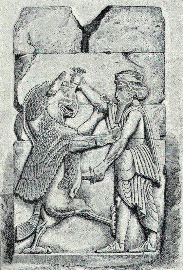

The next thing was to decide as to the best route for the return march, and Ariaeus was of opinion that it would be better not to, return by the way they had come.
"If we go that way," he said, "we cannot fail to perish from hunger, for even on the journey hither we have often been short of food, and in those places where food was plentiful, we have already taken all that was to be had. I think I can show you a better way, which though longer, goes through fruitful districts. But for the first few days we must make long forced marches, so as to get at least two or three days' journey in advance of the Great King. He will give up the idea of pursuing us, for he would not venture to come after us with a small army; and with a great army, which must of necessity move slowly, he would not be able to overtake us."
Early the next morning therefore, the allied forces started together for some villages in which they were to encamp for the night. They were still on the march when, towards evening, they perceived by various signs that the King's troops were not far off. Clearchus did not wish for an engagement, for his men were tired and hungry, having had nothing to eat all day, but in order that he might not seem to be afraid of them, be went on marching in the same direction as before.
The enemy did not however appear in sight, and the Hellenes reached the villages for which they were bound, without any fighting. But on arriving at the place, they found that the King's soldiers had been there, and had destroyed everything; they had not even stopped short of burning down the houses. The first-comers were able to make themselves fairly comfortable, but the rear, who did not get in till after dark, were obliged to lie down upon the bare ground, without food or shelter.
The discomfort gave rise to quarrels among the soldiers, and there was so much noise and confusion that those at a distance were seized with panic, thinking that the enemy had surprised them in the darkness. Thus the night passed in wretchedness and anxiety, but in the morning Clearchus invented a joke as a means of reassuring the disheartened soldiers. He sent for a herald, and told him to go round the camp, proclaiming that whoever would give information as to the person who had let the ass into the camp, should receive a talent of silver. By this joke the soldiers understood that Clearchus meant to laugh at them for their fright, and to assure them that there had been no real cause for it.

THE GREAT KING FIGHTING WITH A MONSTER.
Meanwhile the King was by no means at ease, for be was quite as much afraid of the Hellenes as they of him, and in the morning he again sent heralds to them. He did not now attempt to demand that they should give up their arms, but proposed to make a treaty with them.
When the heralds were announced, Clearchus was very careful not to let it appear that the Hellenes were in any pressing need, or that they felt their position to be a difficult one. The heralds were told that they must wait until he could find time to attend to them, and meanwhile he drew up his troops in such a manner as to make the best possible display, putting in front those who had complete sets of armour and who could otherwise appear to the greatest advantage.
This done, he went forward with the other generals to receive the heralds, and asked, rather curtly, what they wanted. When they had delivered their message, he answered, "Say to the King that another battle will be necessary before we can think about a treaty. For we have nothing to eat, and I cannot speak to my men about a treaty until their hunger is stayed."
The heralds rode away, but quickly returned, which proved that the King was near at hand. They brought with them guides, and said that in case the Hellenes were willing to agree to a truce, they were to conduct them to a place where food could be obtained. Clearchus and the other generals withdrew to consider this proposal, and they very quickly decided to conclude the truce at once. But nevertheless they again kept the heralds waiting for some time, so that it might appear as if it had been a good while before they could make up their minds to agree to the King's proposals.
At last the decision was communicated to the heralds, and the two armies set out under the direction of the King's guides, marching by a road which was one of the very worst that the Hellenes had ever seen. The district through which they were passing was part of the province of Babylonia, and was crossed in all directions by an infinite number of canals and ditches which kept the country well watered, and made it abundantly fruitful. At this time of year they were not usually full of water, but in order to make the march as difficult as possible for the Hellenes, the Persians had opened all the sluices. Consequently the canals could not be crossed except by bridges, of which there were none.
The Barbarians had been anxious to give the Hellenes a practical example of the endless difficulties that they might expect to meet with in the course of their retreat. But if they hoped that this would have the effect of making them humble and ready to submit, they were much mistaken; Clearchus was not the man to be beaten by a difficulty of this sort, and under his direction the Hellenes set cheerily to work to make temporary bridges wherever they were required. In many places fallen trunks of date-palms lay ready to hand, and where these did not suffice, others were quickly felled. All soldiers under the age of thirty years were ordered to the work, in order that it might be carried through as fast as possible. Clearchus himself acted as overseer, moving about briskly among the soldiers with a staff in the right hand and a spear in the left, and whenever he saw a man loitering over his task, he did not hesitate to give him a beating. Although he was more than fifty years old, he laboured with his own hands with the utmost diligence, and this example was followed by many other of the older men.
At last the toil was over, and the Hellenes reached some villages where a little money could buy food in abundance. Inexhaustible seemed the immense stores of corn, dates, and palm-wine, as well as of a kind of acid drink made also from the date-palm, which they found in these villages. The food, moreover, was as good as it was plentiful. Dates better than any that the Hellenes had ever eaten at home were here food for slaves; those put aside for the masters were of immense size and exquisite flavour. Delicious too was the sweet juice of the date-palm, but unhappily it was apt to give head-ache.
In this district the Hellene army encamped, together with their Barbarian allies. For two days they heard nothing of the enemy, but on the third day Tissaphernes arrived, with a brother-in-law of the Great King and three other Persian noblemen, attended by many slaves. Tissaphernes demanded an interview with the Hellene generals, and when they had presented themselves, he began to address them in a friendly manner, by means of an interpreter who understood both Persian and Hellene speech.
"You know," said Tissaphernes, "that I am the nearest neighbour of your country, and as I see that you are now in great straits, I am anxious to obtain the permission of the Great King to conduct you to your homes in safety. By so doing I hope not only to gain your gratitude, but also that of all Hellas. The King knows and values the services I have rendered him. I was the first to bring him news of the revolt of Cyrus, and the only one who did not fly before you in the battle. He has promised me therefore to grant my request on your behalf, but at the same time he desires me to ask you for what reason you have taken the field against him. As your friend I advise you to be careful in giving your answer, that I may not fail in my endeavour to help you."
After conferring with the other generals, Clearchus answered, "We knew not that Cyrus intended to lead us against the Great King. But when he who had shown us much kindness was in need of our help, we should have been shamed before gods and men had we then deserted him. Cyrus is now dead, and we have no further quarrel with the King, nor any wish to injure his subjects. If we are allowed to go on our way in peace, we will return quietly to our home, and for any kindness that we may receive we shall prove ourselves grateful. But if we are treated as enemies, then by the help of the gods, we shall know how to defend our lives."
With this answer Tissaphernes professed himself satisfied, and he rode away, saying, "Let there be a truce between us until I come again."
Three days afterwards he again made his appearance. "It was far from easy," he said, "to dispose the King in your favour, but at last I have succeeded, and we are ready to conclude a treaty with you to this effect:—You are to be allowed to pass through the King's dominions in peace, and where there is food to be bought you shall be supplied with it in exchange for your money; where they refuse to sell it, you can take what you require. On your side, you must swear that you will act the part of friends and not enemies towards the people of the countries through which you march."
These conditions having been agreed to, Tissaphernes and the Persian nobles gave their right hands to the generals and captains of the Hellenes, and all swore by the most sacred oaths that they would faithfully keep the treaty. Then Tissaphernes departed, saying, "I shall very soon bring my army to escort you on your way to Hellas, whilst I return myself to my own province."